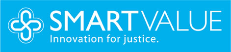
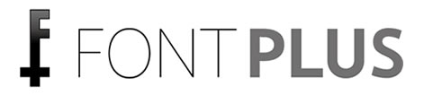
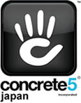
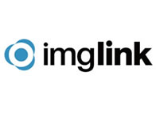
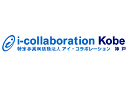

アクセシビリティとは
情報のバリアフリー。利用する全ての人が、心身の機能や利用する環境に関係なく、提供されている情報やサービスを利用できること


アクセシビリティの祭典
「アクセシビリティの祭典」は、自治体・企業・制作会社・障害者支援施設などに属する方々、障害を持つ当事者など様々な立場の人が、新しいアクセシビリティ（情報バリアフリー）技術に触れて体感していただける祭典です。
「アクセシビリティ＝高齢者や障害者への特別な配慮（福祉）」ではなく、「アクセシビリティ＝マシンリーダブル！」をテーマに、展示やセミナーを通じて、ソフトやデバイスが多様化する現在・未来のアクセシビリティをご覧いただけるようなコンテンツを準備する予定です。ぜひ会場に足をお運びください。
お知らせ
2015年1月21日
展示情報 その２公開しました。
地デジ対応「テレビが聞けるラジオ」品番TRKO‐01B（株式会社アステム 様）
2015年1月21日
展示情報 その1公開しました。
未来を切り拓く、めがね型スマートフォン Mirama（株式会社ブリリアントサービス 様）
2015年1月21日
セミナー情報 その２公開しました。
Web制作者が知っておきたいアクセシビリティ最新動向（株式会社ミツエーリンクス 取締役CTO 木達 一仁 氏）
2015年1月21日
セミナー情報 その1公開しました。
動画をアクセシブル＆マシンリーダブルにする方法（株式会社インフォアクシア 代表取締役 植木 真 氏）
セミナー・対談ピックアップ
メイン対談：未来のアクセシビリティを考える
近年IT技術目まぐるしい発展の中で新たにIoT、ウェアラブルデバイスなどのキーワードが登場し、関連する製品が発表されてきています。
次々に登場する新しいデバイスを活用することによって私たちの未来がどう変わるのか？
それらデバイスのアクセシビリティはどのように考えられているのか？
本セミナーではウェアラブルデバイス、アクセシビリティ各界のトップリーダーである塚本昌彦教授、植木真氏をお招きし、これらのテーマについて最新の業界動向を踏まえて語っていただきます。
神戸大学大学院工学研究科 教授
塚本 昌彦氏
神戸大学大学院工学研究科・教授。工学博士。
2001年より研究の一環としてHMDの装着生活を行っている。
NPOウェアラブルコンピュータ研究開発機構理事長。
日本ウェアラブルデバイスユーザー会会長。
株式会社インフォアクシア 代表取締役
植木 真 氏
WebサイトおよびWebアプリケーションのアクセシビリティ確保をコンサルティング。国内外のアクセシビリティ・ガイドライン策定にも従事。
現在はWAIC（ウェブアクセシビリティ基盤委員会）の委員長を務めている。
セミナー・対談タイムスケジュール
セミナータイトルにリンクが貼られているセミナーは、詳細情報をご確認いただけます。
確定次第、順次、詳細情報を公開いたします。
| 時間 | セミナー内容 | 主な対象者 |
|---|---|---|
| 10時30分から 11時00分 |
開会のご挨拶 及び アクセシビリティ＝マシンリーダブルとは NPO法人アイ・コラボレーション神戸 理事長代理 板垣 宏明 氏 |
自治体企業制作者福祉関係 |
| 11時00分から 11時50分 |
神戸大学大学院工学研究科 ＆ 株式会社インフォアクシア ファシリテーター：バスタイムフィッシュ代表 村岡 正和 氏 |
自治体企業制作者福祉関係 |
| 12時00分から 12時50分 |
「アクセシビリティ確保」の真の目的と、その達成のために必要な事 株式会社スマートバリュー 営業Group 営業企画支援Team 原口 正くろーど 氏 |
自治体企業制作者福祉関係 |
| 13時00分から 13時50分 |
アクセシビリティ、制作者も自分目線で考えてみよう！ 講演：D2DRAFT（講師：マークアップエンジニア兼ウェブバリアフリー品質保証技術者 小枝 繁子 氏／D2DRAFTのご紹介：D2DRAFT代表及びコンクリートファイブジャパン株式会社 代表取締役 菱川 拓郎 氏） |
制作者 |
| 14時00分から 14時50分 |
視覚・聴覚障害のある方にiOS機器を活用してもらうポイント講座 エイチピースタイリング 代表 高森 三樹(たかもりみき) 氏 |
自治体福祉関係 |
| 15時00分から 15時50分 |
Web制作者が知っておきたいアクセシビリティ最新動向 株式会社ミツエーリンクス 取締役CTO 木達 一仁 氏 |
自治体企業制作者福祉関係 |
| 16時00分から 16時50分 |
動画をアクセシブル＆マシンリーダブルにする方法 株式会社インフォアクシア 代表取締役 植木 真 氏 |
自治体企業制作者福祉関係 |
| 17時00分から 17時10分 |
ライトニングトーク１ オープンソースのアクセシビリティ・チェックツール アルファサード株式会社 開発ディレクター 持田 徹 氏 |
制作者 |
| 17時10分から 17時20分 |
ライトニングトーク２ 日本語Webフォントの最新事情 ～アクセシビリティとの調和～ ソフトバンク・テクノロジー株式会社 Webフォント エバンジェリスト 関口 浩之 氏 |
自治体企業制作者福祉関係 |
展示
確定した展示情報を順次掲載いたします。
詳細は会場にてご確認ください。
時間未定
動画をアクセシブル＆マシンリーダブルにする方法
株式会社インフォアクシア 植木 真氏
YouTubeなどを使って動画を配信することは、ごく当たり前のことになってきました。その動画のコンテンツをマシンリーダブルにできる方法があるって、皆さんご存知でしたか？ それは、動画コンテンツにキャプションを提供することです。しかも、思っているよりも意外とカンタンにできてしまうのです。
このセミナーでは、動画にキャプションを提供するメリットは何か、キャプションはどのように作成すればよいのかをはじめ、HTML5やYouTubeなどを使ったキャプションの提供方法までをデモを交えて解説します。
時間未定
動画をアクセシブル＆マシンリーダブルにする方法
株式会社インフォアクシア 植木 真氏
YouTubeなどを使って動画を配信することは、ごく当たり前のことになってきました。その動画のコンテンツをマシンリーダブルにできる方法があるって、皆さんご存知でしたか？ それは、動画コンテンツにキャプションを提供することです。しかも、思っているよりも意外とカンタンにできてしまうのです。
このセミナーでは、動画にキャプションを提供するメリットは何か、キャプションはどのように作成すればよいのかをはじめ、HTML5やYouTubeなどを使ったキャプションの提供方法までをデモを交えて解説します。
アクセシビリティの祭典開催概要
- 日程：2015年2月3日火曜日 10時30分から17時30分（予定）
- 会場：神戸市産業振興センター（〒650-0044 神戸市中央区東川崎町1丁目8番4号 (神戸ハーバーランド内)）
神戸市産業振興センター「アクセス」 ※会場はバリアフリーとなっております。 - 参加費：無料
※ご注意2：運営の都合上、手話や字幕などのご用意はできておりませんので、あらかじめご了承ください。
アクセシビリティの祭典懇親会概要
- 日程：2015年2月3日火曜日 18時30分から20時00分（予定）
- 会場：オールドスパゲッティファクトリー神戸店（〒650-0044 兵庫県神戸市中央区東川崎町1-5-5 煉瓦倉庫レストラン (神戸ハーバーランド内)）
オールドスパゲッティファクトリー神戸店「アクセス」 ※お店はバリアフリーとなっております。 - 参加費：3,800円
- 定員：約30名
アクセシビリティの祭典 展示・セミナー・懇親会事前参加申込
アクセシビリティの祭典実行委員会
- 事務局：ＮＰＯ法人アイ・コラボレーション神戸
- お問合せ：電話 078-302-9811／ＦＡＸ 078-302-9811
後援
協賛：シルバースポンサー
 協賛：ロゴスポンサー
  